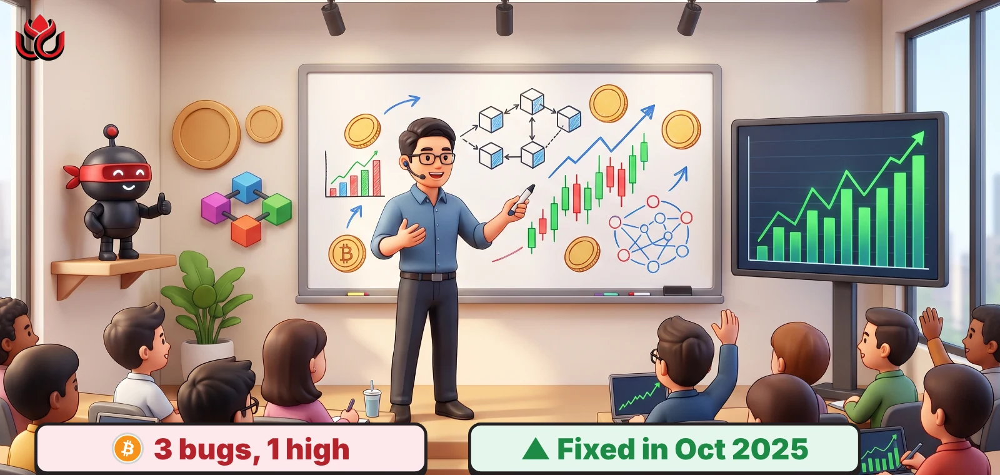
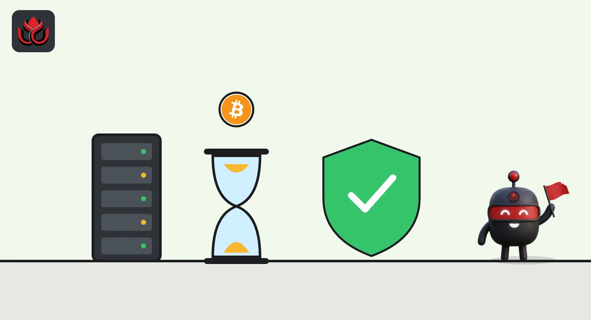

Bitcoin Core discloses 3 bugs fixed in 2025. The worst could stop a node building blocks
Bitcoin Core published three security advisories on November 10, one rated high. All were fixed in releases from October 2025, and the advisories describe no theft of coins.

Key points
- Bitcoin Core disclosed CVE-2025-62861 (high), CVE-2025-62859 (medium) and CVE-2025-62860 (medium) on November 10, 2026.
- The high-severity bug could leave a node's mempool broken after a chain reorganization, so it could not produce block templates until restarted.
- Fixes shipped in versions 30.0 and 29.2 in October 2025. 28.3 carries two of the three. The last affected line, 29.x, reached end of life on October 27, 2026.
What was disclosed
Bitcoin Core, the most widely used software for running a bitcoin node, published three security advisories on Tuesday, November 10, 2026, on its security advisories page. One is rated high and two medium. None is in the critical tier, which the project reserves for problems such as coin theft or coins created outside the issuance schedule. The advisories do not report any attacks using these bugs.
All three were fixed more than a year ago. Bitcoin Core 30.0 shipped on October 10, 2025, and 29.2 on October 14, 2025, with 28.3 following that month. Under the project's policy, medium and high bugs are made public two weeks after the last affected release line reaches end of life. For these bugs, that line was 29.x, which hit end of life on October 27, 2026.
The high one: blocks could stop
CVE-2025-62861 affects versions 28.0 to 28.2 and 29.0 to 29.1. It involves TRUC, or version 3, transactions, a newer type with strict limits on how many unconfirmed parents and children they can have. During a reorganization, when a node swaps out recent blocks for a competing chain, it puts the dropped transactions back into its mempool, its waiting room for unconfirmed transactions.
A rule that evicts a "sibling" transaction kept running in that step when it should have been skipped. The node could end up holding transactions that spend outputs that no longer exist. Bitcoin Core says "a node that performed such a reorg cannot produce blocks until it is restarted." That matters most to miners and pools, which build block templates from their own nodes.
The bug was reported to the security list on September 26, 2025, and the fix was merged on October 2, 2025.

Two medium bugs
CVE-2025-62859 affects versions before 29.2 and 30.0. A malicious peer that announced a compact block first could stall the victim's block processing. The node fell back to asking the same peer for the full block, with a 10-minute timeout. The page says the attack could repeat if the attacker controlled the victim's three high-bandwidth peers, or if the node ran in blocks-only mode. It was reported on April 28, 2025.
CVE-2025-62860 hit only nodes that set the non-default -whitelist option. Inbound Tor connections arrive from the Tor program's local address, so if that address fell inside a whitelisted range, every Tor peer got relaxed limits meant for trusted peers. Bitcoin Core says some node vendors bundled Tor with such a setting, leaving thousands of reachable mainnet nodes exposed. It was reported on September 12, 2025.
Timeline
Compact block stall (CVE-2025-62859) reported
Tor whitelist issue (CVE-2025-62860) reported
Reorg mempool bug (CVE-2025-62861) reported
Bitcoin Core 30.0 released with fixes
Bitcoin Core 29.2 released with fixes
29.x line reaches end of life
All three advisories published
What node runners can check
Bitcoin Core 30.0 and later include all three fixes, and so does 29.2, though the 29.x line reached end of life on October 27, 2026. The compact block advisory lists fixes only in 29.2 and 30.0, not in 28.3. Restarting a node clears the broken mempool from the high bug, but only the upgrade removes the cause. Bitcoin Core also disclosed three other bugs on October 28, 2026, including memory growth issues and a rare undo-file overflow, on the same advisories page.
LC Insight analysis
This section is our reading of the facts above, not a statement of fact.
- We think the headline risk here is lower than the word "high" suggests: the fixes have been out for a year, and the advisories describe stalls, not lost coins.
- The Tor issue shows how a setting chosen by node vendors, not Bitcoin Core's defaults, can widen exposure. In our view, users of bundled node boxes have the most reason to check their version.
- Bitcoin Core's one-year wait before disclosure gives operators time to upgrade, but it only works if they do.
What's next
- Node software updates from vendors that bundle Bitcoin Core with Tor.
- Further advisories as the 30.x line ages toward its own end of life.
Disclaimer. This article is based on public information and the sources listed below as of the update time shown. It is for information only and is not investment, legal or tax advice. Figures may change as companies and authorities publish new data.